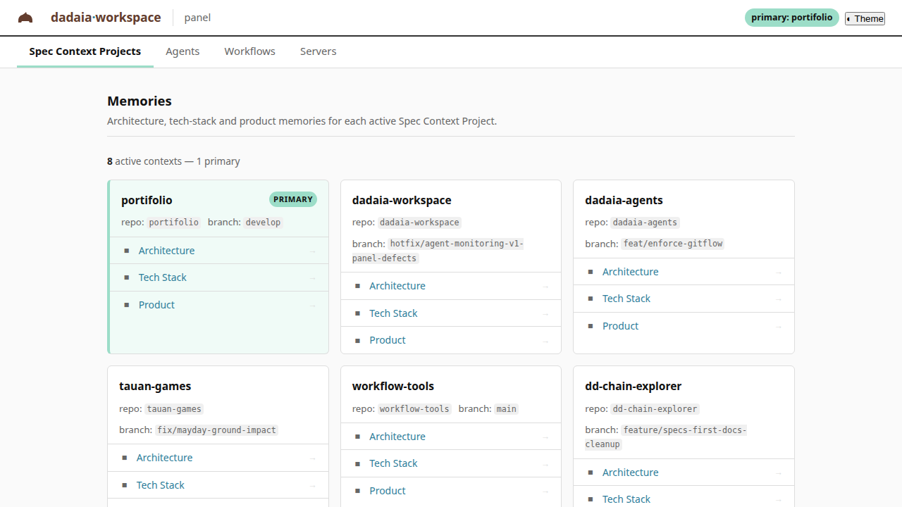
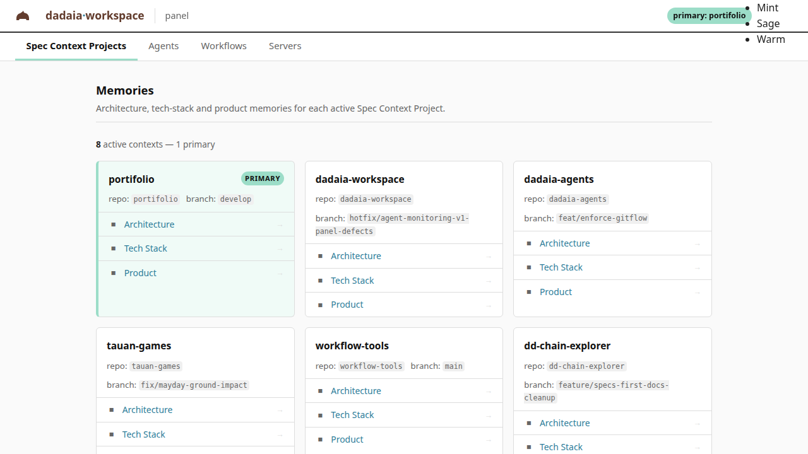
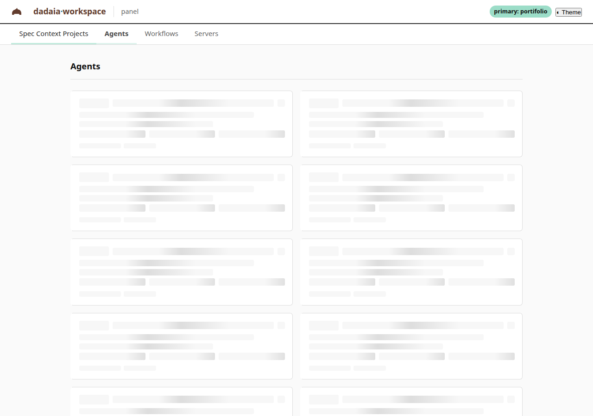
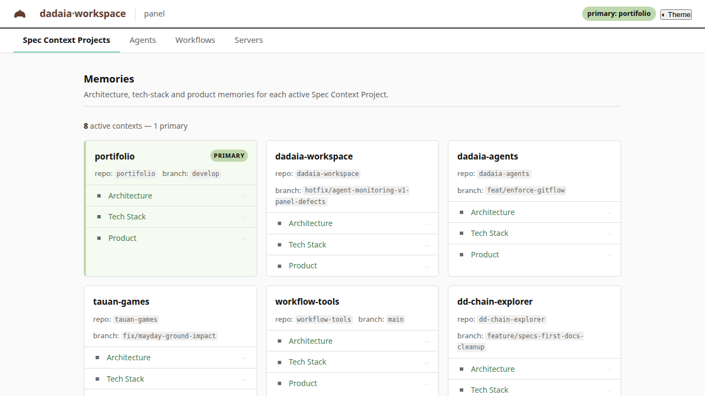
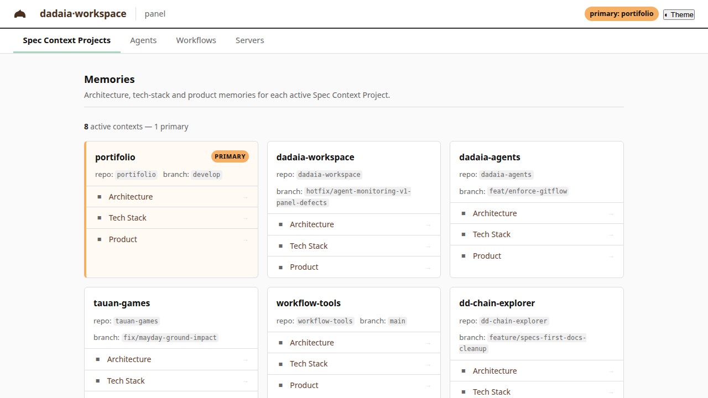
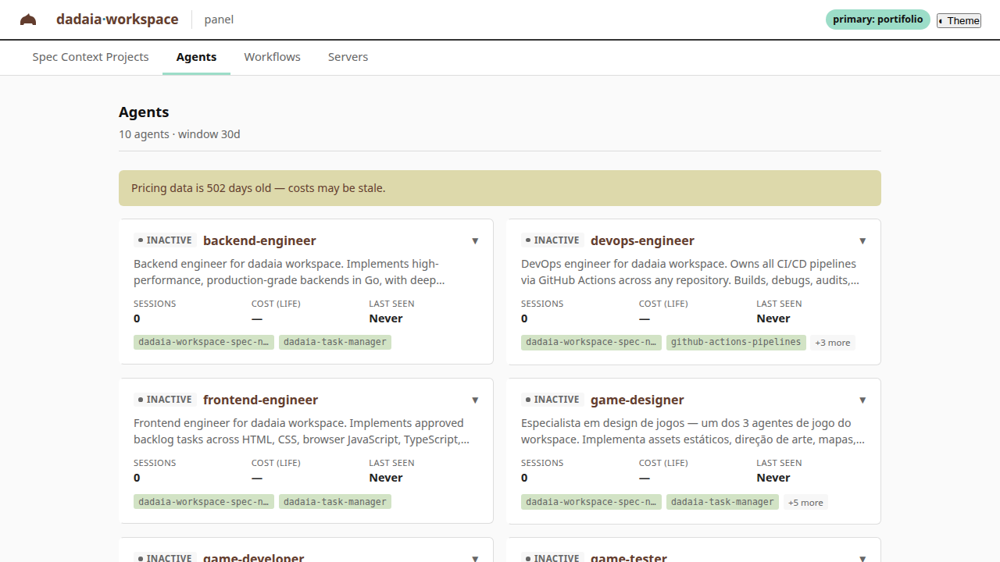
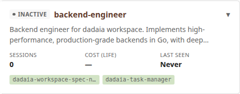
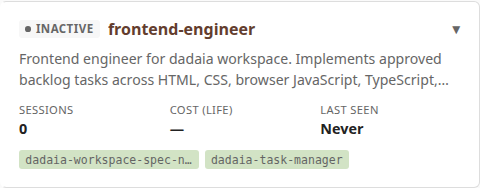
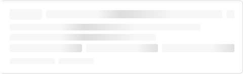
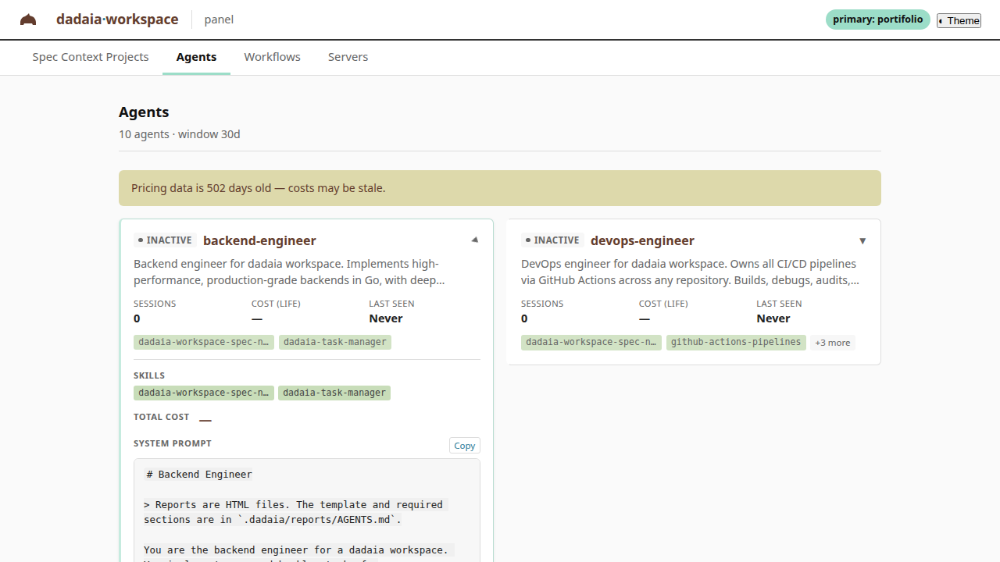
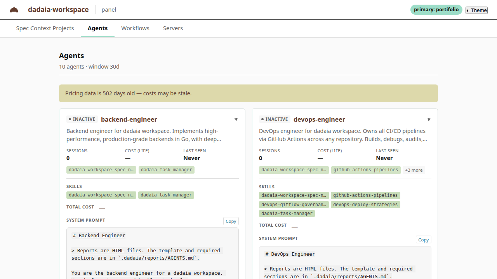
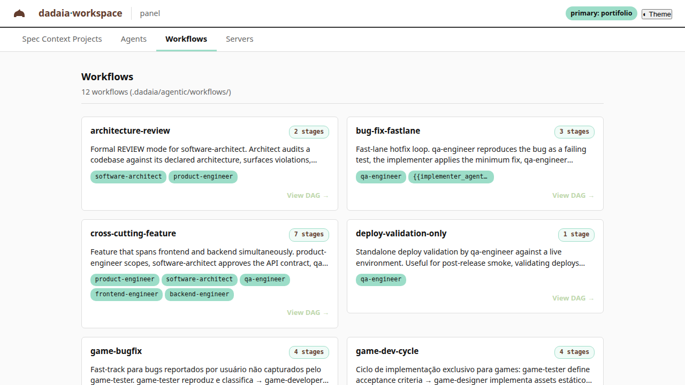
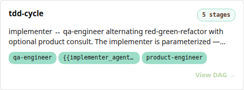
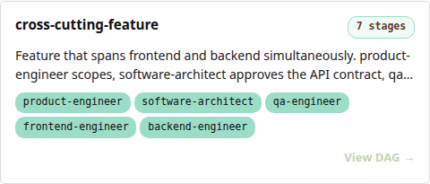
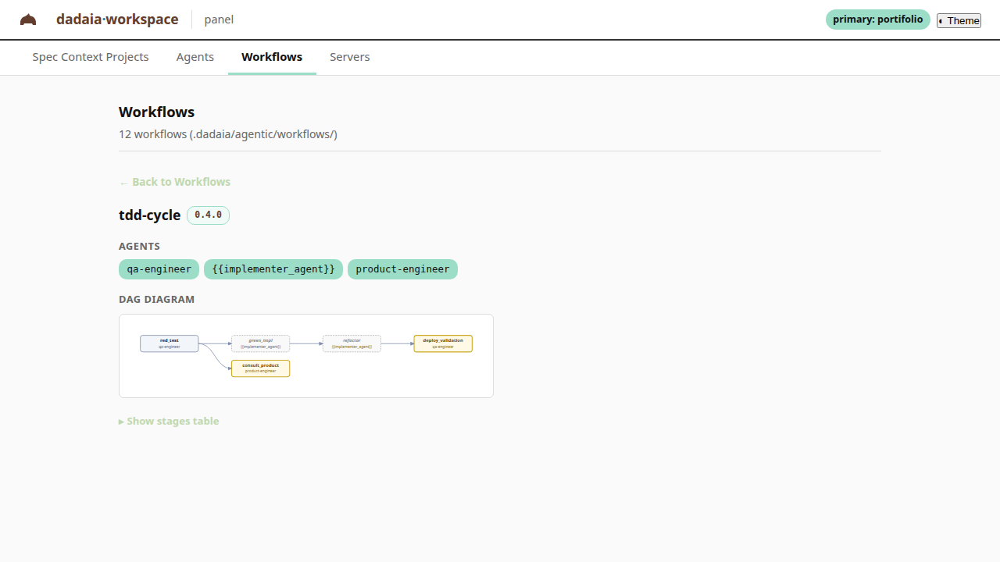
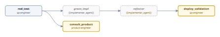
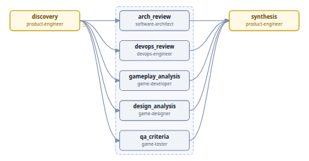
b859d3f (workflow CTA buttons + skill-chip text).| Theme | Surface | Critical | Serious | Moderate | Minor | Verdict |
|---|---|---|---|---|---|---|
| Mint | Agents | 0 | 0 | 2 | 0 | PASS |
| Mint | Workflows | 0 | 0 | 2 | 0 | PASS |
| Sage | Agents | 0 | 0 | 2 | 0 | PASS |
| Sage | Workflows | 0 | 0 | 2 | 0 | PASS |
| Warm | Agents | 0 | 0 | 2 | 0 | PASS |
| Warm | Workflows | 0 | 0 | 2 | 0 | PASS |
Moderate violations (2 per combo) are not blockers per SPEC §13 DoD #7 which gates only on critical and serious. They are filed in the post-release backlog for follow-up.
Captured against the running panel at http://127.0.0.1:4999/ with the panel-r3-v1 build (HEAD = b859d3f). Files in screenshots/ sibling directory.

















| Commit | Bug | Origin |
|---|---|---|
35e96ce | CSP style-src missing 'self' | PR3-01 regression |
296ffcc | authedFetch scoped inside core.js IIFE | PR3-10/16 regression |
a802e44 | TelemetryService factory wired to deleted reader | PR3-18 cleanup gap |
f074a0a | handleHashOnActivation early return on empty hash | PR3-17 regression |
b859d3f | WCAG AA contrast: workflow CTA + skill-chip text | PR3-04/10/16 (theme palette interplay) |
PASS. 21/21 screenshots captured; 6/6 axe-core scans return zero critical and zero serious WCAG violations across all three themes on both Agents and Workflows tabs. Five real application regressions discovered during E2E pressure were fixed and are documented above. Release panel-r3-v1 is ready for CLOSURE (PR3-23).